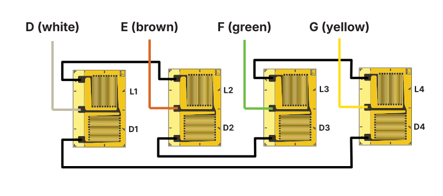

Load cell design
Initial design calculations
| Force limit \(F_{max}\) | 200 kN |
| Measured strain at max load \(\epsilon\) | 2000 \(\upmu\upepsilon\) |
| Youngs modulus of steel (\(E\)) | \(210\mathrm{MPa} = 210 \mathrm{N/mm^2}\) |
Relationship between strain, stress, force and area
Filling in the numbers, calculating the required area of the cross-section of the active region of the load cell.
The stress in the material.
Optimizing the design
If we use four x/y strain gauges (eg. XY71-6/120 from HBM) we can create a double full bridge that's sensitive to strain in the force direction as well as strain caused by the Poisson effect. This will increase the measured strain by a factor of 2.61.
We can now increase the wall thickness of the active region of the load cell and maintain the same output. Thus increasing the stiffness and resistance to bending.
The outer diameter of the active region is 60 mm (\(r_1 = 30\mathrm{mm}\)). We can calculate the inner diameter (\(d_2\)) as follows:
The maximal stress in the material is also a lot less now:
Wiring
The image below shows an optimized method of connecting the strain gauges preventing crossing of wires.

The schematic representation of the circuit can be seen in the image below.
Image caption
Understanding the factor 2.6
The increase in sensitivity might not be obvious right away. So let's look at a simplification.
Simplified wheatstone bridge circuit
Let's say R1 and R4 are both active strain elements placed in the force direction of the load cell. An increase in force will induce an increase in resistance in these strain gauges.
Assuming a change of 1000 \(\upmu\upepsilon\) (which is 0.1%), R1 and R4 both increase resistance proportionally. Let's assume a K-factor of 1 for now, so the resistance also inceases 0.1 %. R1 is based in the positive side of the bridge, and R4 in the negative side.
Here you see a factor 2 output, because the change in strain affects the output equally on the positive as the negative side of the bridge.
As mentioned above, the factor 0.6 comes from the transverse strain gauges which are sensitive to the Poisson's ratio of deformation in the direction perpendicular to the force on the load cell.
Adding more strain gauges to get higer sensitivity
Adding more strain gauges in series will not increase the bridge sensitivity. As these gauges will just act the same as one larger strain gauge. This will increase only the averaging effect and might decrease sensitivity to local defects in the material.